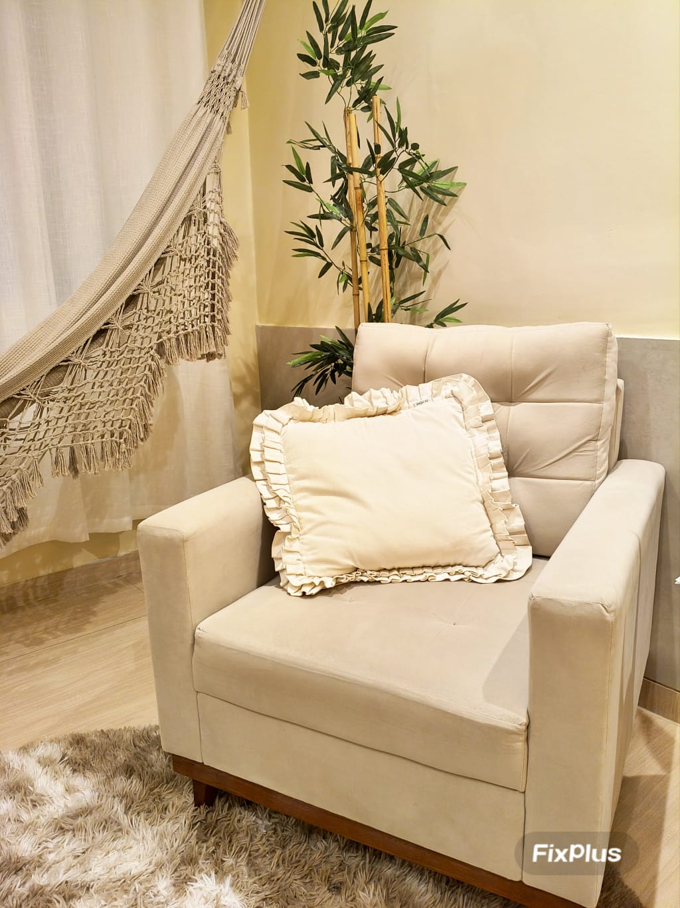

Psicologia Clínica & Mentoria
Psicóloga Clínica e Mentora — atendimento presencial em Fortaleza e online para todo Brasil e fora do País. Um espaço seguro para o seu autoconhecimento e transformação.

Sobre Mim
Sou psicóloga clínica registrada sob o CRP 11/24741, apaixonada por ajudar pessoas a encontrarem equilíbrio emocional e clareza em suas jornadas pessoais e profissionais.
Minha abordagem é a Terapia Cognitiva Comportamental e contextuais, centrada no acolhimento, na escuta ativa e na construção de um espaço seguro onde você possa se expressar livremente. Atuo com psicoterapia clínica voltada para o cuidado da saúde mental e também ofereço mentoria promovendo direcionamento e orientação aos novos profissionais de psicologia no ingresso ao mercado de trabalho.
Acredito que cada pessoa carrega dentro de si os recursos para a mudança — meu papel é caminhar ao seu lado enquanto você os descobre.
Espaço Terapêutico
O consultório foi planejado para oferecer um ambiente acolhedor, tranquilo e seguro. Cada detalhe foi pensado para que você se sinta à vontade desde o primeiro momento.

O Que Ofereço
Dois caminhos para o seu desenvolvimento — escolha o que faz mais sentido para o momento da sua vida.
Um processo terapêutico focado na sua saúde mental e emocional. Através de uma escuta acolhedora e técnicas fundamentadas, trabalhamos juntos questões como ansiedade, depressão, autoestima, luto e conflitos interpessoais.
Um acompanhamento estratégico para os novos profissionais de psicologia que buscam organização e orientação no ingresso ao mercado de trabalho na clínica. A mentoria é orientada com foco em ação e desenvolvimento prático.
Ferramentas Interativas
Ferramentas gratuitas para você iniciar sua jornada de autoconhecimento e bem-estar.
Avalie de 1 a 10 como você se sente em cada área da sua vida. O gráfico será atualizado em tempo real.
Uma técnica simples para aliviar a ansiedade e acalmar a mente. Siga o ritmo do círculo.
Dúvidas Frequentes
Cada sessão tem duração de 50 a 60 minutos.
Atualmente o atendimento é particular. Entre em contato pelo WhatsApp para saber mais sobre valores e formas de pagamento.
A psicoterapia é voltada para o cuidado da saúde mental e emocional, abordando questões como ansiedade, depressão, traumas e autoconhecimento profundo. Já a mentoria é voltada a novos profissionais de psicologia que buscam organização e orientação no ingresso ao mercado de trabalho na clínica.
O atendimento online acontece por videochamada em plataforma segura. Você precisa apenas de um ambiente tranquilo, boa conexão com a internet e um dispositivo com câmera. A experiência terapêutica é tão eficaz quanto o atendimento presencial.
Não! O atendimento presencial é realizado em Fortaleza, mas o atendimento online está disponível para pessoas de qualquer lugar do Brasil ou mesmo fora do País.
Basta clicar no botão "Agendar Sessão" em qualquer parte do site. Você será direcionado(a) para o WhatsApp, onde poderemos conversar sobre suas necessidades e encontrar o melhor horário.